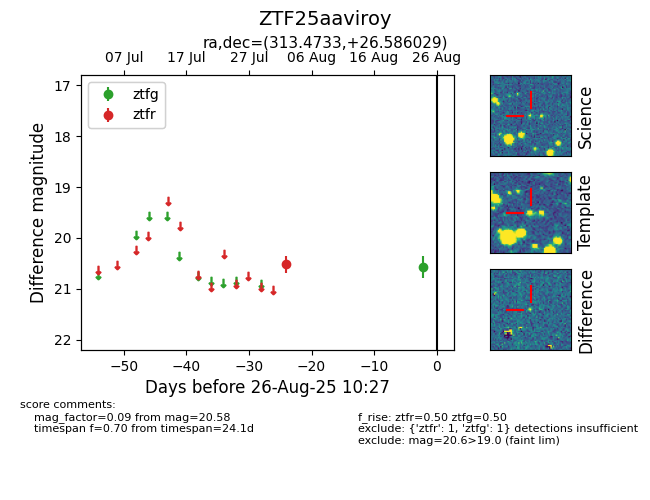

Target ZTF25aaviroy at 2025-08-26 10:27, see:
FINK: fink-portal.org/ZTF25aaviroy
Lasair: lasair-ztf.lsst.ac.uk/objects/ZTF25aaviroy
ALeRCE: alerce.online/object/ZTF25aaviroy
alt names
ZTF25aaviroy (ztf,fink)
coordinates:
equatorial (ra, dec) = (313.4733,+26.58603)
galactic (l, b) = (71.1472,-11.60900)
photometry
last ztfg=20.58, ztfr=20.51
1 ztfg, 1 ztfr detections
